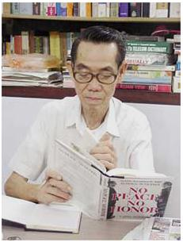

LỜI TỰA


Larry Berman và Nguyễn Đại Phượng
Copyright 2007 by Larry Berman Published by arrangement with Smithsonian Books in association with Harpercollins Publishers Bản quyền năm 2007 của Larry Berman
Xuất bản có sự thoả thuận với Smithsonian Books kết hợp với Nhà xuất bản Harpercollins Bản quyền tiếng Việt thuộc về Nhà xuất bản Thông tấn.

Phạm Xuân Ẩn
LỜI TỰA
Tháng 4/2007, giáo sư, nhà sử học người Mỹ Larry Berman cho ra mắt độc giả cuốn sách viết về nhà tình báo Việt Nam Phạm Xuân Ẩn với tựa đề Điệp viên hoàn hảo (Perfect Spy). Cuốn sách là công trình nghiên cứu công phu của tác giả suốt 5 năm, trong đó khắc hoạ chân dung Phạm Xuân Ẩn - một nhà tình báo nổi tiếng của chúng ta.
Ngay sau khi phát hành, cuốn sách đã thu hút sự quan tâm đặc biệt của độc giả trong và ngoài nước Mỹ, trong đó có độc giả Việt Nam.
Về thiếu tướng tình báo, Anh hùng lực lượng vũ trang nhân dân Phạm Xuân Ẩn, cho đến nay đã có khá nhiều tư liệu, tác phẩm, bài viết của các tác giả trong và ngoài nước đánh giá cao về ông. Tuy nhiên, còn nhiều điều "bí ẩn" trong con người Phạm Xuân Ẩn mà bạn đọc muốn biết. Cuốn sách Điệp viên hoàn hảo của Larry Berman đã phần nào đáp ứng mong muốn đó của độc giả.
Nếu có thể nói một điều gì chung nhất về Phạm Xuân Ẩn thì đó chính là lòng yêu nước vô bờ bến, lòng trung thành với Đảng, với ngành tình báo của một đảng viên cộng sản trung kiên, một cán bộ tình báo mẫu mực, đã cống hiến trọn đời mình cho sự nghiệp cách mạng của Đảng, của dân tộc. Larry Berman đã viết: "Động cơ cuộc sống của Phạm Xuân Ẩn chính là những mục đích cao cả của chủ nghĩa yêu nước Việt Nam. Tình yêu dành cho đất nước đã giúp ông tin tưởng vào con đường cách mạng mình đã chọn - con đường mà ông có thể cống hiến tốt nhất cho đất nước.
"Tôi đã hứa trước Đảng… Tôi còn có nhân dân trông cậy vào tôi và sứ mạng của tôi. và ông đã không phụ lòng tin của Đảng, của nhân dân. Những tin tức tình báo quan trọng kèm theo sự phân tích, đánh giá sắc sảo của ông đã góp phần giúp Bộ Chính trị, Quân uỷ Trung ương có cơ sở tin cậy để đề ra quyết sách đúng đắn trong cuộc chiến tranh chống Mỹ. Những báo cáo tình báo của Phạm Xuân Ẩn chính xác đến mức Đại tướng Võ Nguyên Giáp đã từng nhận xét rằng, "dường như chúng ta có mặt ngay trong phòng tác chiến của Mỹ".
Là một nhà tình báo có những đóng góp to lớn cho sự nghiệp giải phóng dân tộc, từng hoạt động trong "vỏ bọc" một nhà báo làm việc cho Tạp chí Time của Mỹ tại Sài Gòn, Phạm Xuân Ẩn không mưu cầu lợi ích cho riêng mình, mà ông hoạt động vì sự nghiệp giải phóng đất nước. Với nghề tình báo thầm lặng và đơn tuyến, chỉ một sai lầm nhỏ là có thể nguy hiểm tới sự an toàn của tổ chức, tính mạng của bản thân và đồng đội Phạm Xuân Ẩn quả không chút phóng đại khi nói về cái nghiệp đã "vận vào mình": "Người ta có thể nói gì về cuộc sống khi mà luôn chuẩn bị sẵn sàng hy sinh.
Để chiến thắng đối phương phải hiểu rõ đối phương. Phạm Xuân Ẩn đã được cơ quan tình báo quân sự của chúng ta cử sang Mỹ học báo chí cũng nhằm mục đích đó. Trong suốt thời kỳ chiến tranh, Phạm Xuân Ẩn thầm lặng hoạt động trong lòng đối phương. Với nghiệp tình báo mà ranh giới giữa thực và giả thật mong manh, thật khó phân định, thì Phạm Xuân Ẩn - "một con người bị xẻ đôi" như một nhà báo Mỹ từng gọi ông, sẽ luôn là ẩn số đối với chúng ta. Đó chính là thành công của nhà tình báo Phạm Xuân Ẩn.
Năm 1975 khi hoà bình lập lại, Phạm Xuân Ẩn bước ra từ "vỏ bọc" trờ về với cuộc sống đời thường của một công dân ở đất nước bao năm oằn mình trong chiến tranh với vô vàn khó khăn. Vì vậy, sự "trở về" ấy không hề đơn giản, nó đòi hỏi ở ông sự thấu hiểu và cảm thông. Và không có gì đáng ngạc nhiên khi trong con mắt của nhà sử học Mỹ Larry Berman, cuộc đời của nhà cựu tình báo và cuộc đời của một con người bình thường luôn có những mâu thuẫn giằng xé những suy tư trăn trở.
Trong cuốn sách Điệp viên hoàn hảo, con người trong "vỏ bọc" mà Phạm Xuân Ẩn "tạo ra" thuở nào nhằm hoàn thành nhiệm vụ tình báo được giao và con người Phạm Xuân Ẩn trong cuộc sống đời thường đã được nhìn nhận dưới nhiều góc độ khác nhau. Xuyên suốt trong cuốn sách là sự vĩ đại gắn liền với những chiến công to lớn và sự dung dị, gần gũi rất con người trong các mối quan hệ, suy nghĩ, cảm xúc của một nhà tình báo; là tính chất anh hùng, vinh quang đi liền với gian khổ, khó khăn, hy sinh âm thầm của nghề tình báo, những day dứt, thậm chí bi kịch của đời riêng không thể chia xẻ của con người tình báo. Dưới ngòi bút của Larry Berman, tất cả những điều dường như là mâu thuẫn đó đã được thể hiện sống động, thống nhất trong cùng một con người Phạm Xuân Ẩn.
Phải chặng đó chính là sự "hoàn hảo" của nhà tình báo Phạm Xuân Ẩn và cũng chính là thành công của tác giả.
Cuốn sách Điệp viên hoàn hảo cung cấp cho độc già nhiều thông tin mới, trong đó có cả những suy nghĩ, nhận xét riêng của tác giả. Tuy nhiên, có một điều chắc chắn rằng, đó chưa phải là toàn bộ thông tin liên quan đến con người và hoạt động của Phạm Xuân Ẩn. Lý do rất đơn giản, gắn liền với một nguyên tắc sống còn của nghề tình báo - nguyên tắc bí mật.
Cần nhớ rằng, khi tiếp xúc với Larry Berman, Phạm Xuân Ẩn vẫn là một nhà tình báo chuyên nghiệp. Ông đồng ý tiếp xúc với Larry Berman để "mở" cho thế giới thấy rõ hơn về cuộc chiến tranh của Mỹ ở Việt Nam, nhưng trong ông cũng luôn thường trực ý thức "đóng" để giữ bí mật cho ngành tình báo, cho những đồng đội của ông đang còn đứng trong bóng tối. Chắc chắn có nhiều thông tin Phạm Xuân Ẩn biết nhưng sẽ không bao giờ nói ra. Bời vậy đối với nhiều người, Phạm Xuân Ẩn sẽ vẫn tiếp tức là một "bí ẩn".
Giáo sư Larry Berman là một nhà sử học nổi tiếng ở Mỹ, tác giả của nhiều cuốn sách về cuộc chiến tranh mà Mỹ tiến hành ở Việt Nam như: Không hoà bình, không danh dự: Nixon, Kissinger và sự phản bội ở Việt Nam, Con đường đi đến bế tắc ở Việt Nam, Vạch kế hoạch cho một thảm hoạ: Mỹ hoá cuộc chiến tranh ở Việt Nam. Cuốn sách Điệp viên hoàn hảo và những cuốn sách nói trên của ông có giá trị lịch sử giúp cho việc nghiên cứu, tìm hiểu về quá trình can thiệp của Mỹ vào cuộc chiến tranh Việt Nam và nguyên nhân thất bại của Mỹ.
Tuy nhiên, là một nhà nghiên cứu nước ngoài, chưa thể hiểu thật sâu sắc và đầy đủ về lịch sử, văn hoá của dân tộc Việt Nam, nên cách nhìn nhận, đánh giá của tác giả trong cuốn sách còn có chỗ khác biệt với chúng ta. Đó cũng là điều dễ hiểu. Chúng ta có thể chia sẻ và cảm thông với tác giả.
Trân trọng công trình nghiên cứu của giáo sư Larry Berman, đồng thời mong muốn cung cấp thêm một nguồn tư liệu để bạn đọc và các nhà nghiên cứu hiểu hơn về cuộc kháng chiến chống Mỹ, cữu nước của nhân dân ta, qua đó thấy được thắng lợi vĩ đại của dân tộc, sự lãnh đạo tài tình của Đảng, sự hy sinh to lớn của nhân dân, chúng tôi xuất bản cuốn sách này.
Trân trọng giới thiệu cùng quý độc giả một ấn phẩm rất đáng tham khảo.
NHÀ XUẤT BẢN THÔNG TẤN